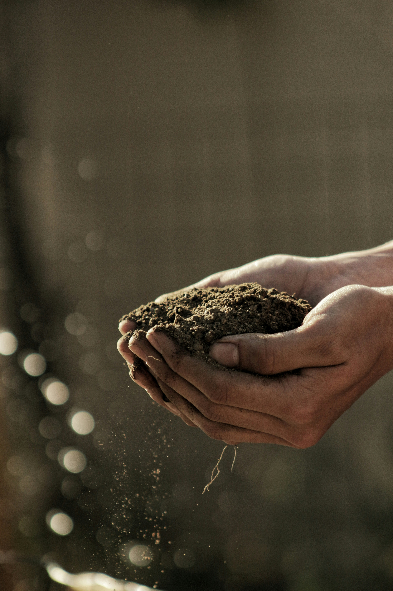

Il nostro negozio online di prodotti per il giardinaggio
Semi
Il nostro negozio online offre una vasta gamma di
semi di alta qualità
per piante e fiori, tra cui semi di ortaggi, semi di erbe aromatiche e
semi di piante da giardino.
Ogni seme è scelto con cura per garantirti un giardinaggio di successo, con fioriture spettacolari e raccolti abbondanti.

Attrezzi
Offriamo anche un'ampia selezione di
attrezzi di alta qualità per il giardinaggio, tra cui rastrelli,
cesoie, vanghe, tagliasiepi e molto altro ancora.
Qui trovi una selezione accurata degli strumenti indispensabili per mantenere il tuo giardino rigoglioso e in perfetta salute.
Ogni prodotto è scelto con cura per garantire durata, efficienza e comfort d’uso.
Scopri la nostra gamma e preparati a vivere un’esperienza di giardinaggio senza precedenti!

Fertilizzanti
Forniamo una vasta gamma di fertilizzanti per piante e fiori, tra
cui fertilizzanti organici e chimici.
Siamo orgogliosi di offrire fertilizzanti di alta qualità, selezionati per soddisfare le esigenze di ogni tipo di pianta e terreno.
Scopri le nostre categorie principali e trova il fertilizzante perfetto per il tuo giardino.

Attrezzature per l'irrigazione
Abbiamo anche un'ampia selezione di
attrezzature per l'irrigazione, tra cui tubi da giardino,
irrigatori, spruzzatori e molto altro ancora.
Qui troverai tutto il necessario per mantenere il tuo giardino rigoglioso e in salute.
Offriamo una vasta gamma di prodotti di alta qualità per soddisfare ogni esigenza, che tu sia giardiniere amatoriale o professionista del settore.

Decorazioni per il tuo giardino
Inoltre, abbiamo una sezione dedicata alla
decorazione del giardino, con fontane, statue e ornamenti per
piante.
Ecco la nostra vasta gamma di elementi decorativi per trasformare il tuo spazio verde in un angolo di paradiso.
Che si tratti di un piccolo balcone, di un terrazzo accogliente o di un ampio giardino, abbiamo tutto ciò che serve per aggiungere un tocco di personalità e bellezza ai tuoi spazi esterni.

I nostri servizi
Siamo appassionati del nostro lavoro e ci impegniamo a fornire
prodotti di alta qualità ai nostri clienti.
Offriamo anche consigli e suggerimenti per aiutare i nostri
clienti a creare un giardino.
Il nostro impegno per la qualità
Crediamo che ogni giardino meriti il meglio. Ecco perché collaboriamo solo con fornitori di fiducia e seguiamo rigorosi standard di qualità.
Ogni prodotto che vendiamo è il risultato di passione, esperienza e dedizione.
Contattaci per ulteriori informazioni o per consigli personalizzati. Siamo qui per aiutarti a coltivare il giardino dei tuoi sogni!